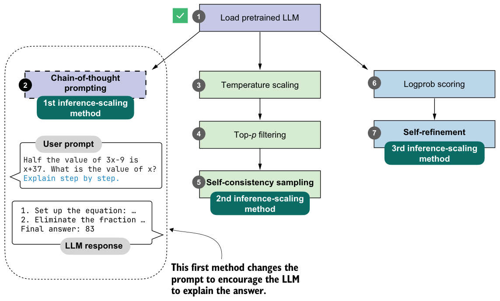
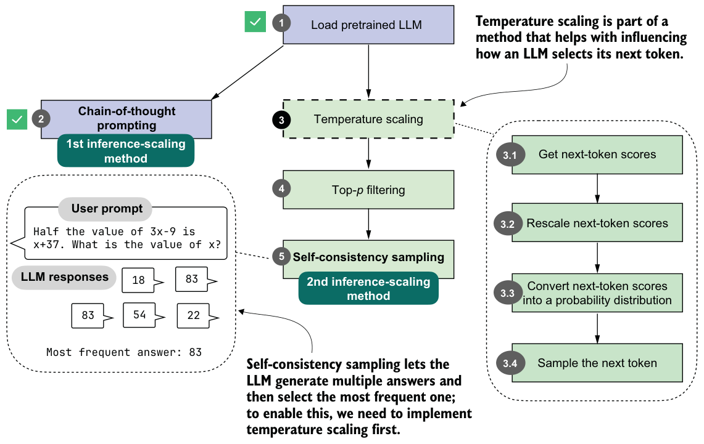

4.3Generating better responses with chain-of-thought prompting
We’ve loaded the pretrained base model and set up the text generation function; now we’ll focus on improving model output through so-called chain-of-thought prompting. This prompting technique is classic, simple, and effective. It modifies the input prompt to encourage the LLM to generate an explanation, or a chain of thought (also called a reasoning chain), as illustrated in figure 4.4.
The simplest way to try chain-of-thought prompting is to append an extra instruction that asks the model to reason step by step. There are multiple ways to phrase this. For example, the original paper on the topic used "Let's think step by step." (https://arxiv.org/abs/2205.11916), but different phrasings may work better depending on the model and task. Here, we’ll use "Explain step by step." because it worked well in my experiments for this chapter, and it keeps the example simple:
prompt_cot = prompt + " \n\nExplain step by step."
response_cot = generate_text_stream_concat_flex(
model, tokenizer, prompt_cot, device,
max_new_tokens=2048, verbose=True,
)
The response is now as follows:
To solve the problem, we need to find the value of \( x \) such that
half the value of \( 3x - 9 \) is equal to \( x + 37 \).
# ...### Step 3: Solve for \( x \)
Subtract \( 2x \) from both sides to isolate \( x \):
\[
3x - 2x - 9 = 74
\]
Simplify:
\[
x - 9 = 74
\]
Add 9 to both sides to solve for \( x \):
\[
x = 74 + 9
\]
\[
x = 83
\]
### Final Answer:
\[
\boxed{83}
\]As you can see, the model now writes a lengthy step-by-step explanation and, in this case, arrives at the correct answer.
This simple chain-of-thought prompt is a good demonstration of the inference-time-scaling tradeoff. While the model now answers correctly, it expends many more tokens than before. As discussed in chapter 2, LLMs generate text one token at a time, and each additional token requires another forward pass through the model. So these intermediate reasoning steps do not just make the answer longer; they also directly increase latency, compute cost, and often API cost.
Note that while the model generated the correct answer in this case, not all problems benefit from chain-of-thought prompting. On simple problems, it can sometimes even degrade the model’s performance, as the model might generate erroneous explanations and mislead itself. This phenomenon is known as “overthinking.”
Lastly, not every model benefits from the “Explain step by step” (or similar) instruction. In this case, we used a simple base model that doesn’t always generate explanations, so chain-of-thought prompting can help. Trained reasoning models, such as the “reasoning” variant of the Qwen3 model we used in the previous chapter, already write explanations alongside their responses and don’t need or benefit from this type of chain-of-thought prompting.
Why chain-of-thought can improve accuracy
Exercise 4.1: Using chain-of-thought prompting on MATH-500
evaluate_math500_stream function from listing 3.15 to see whether chain-of-thought prompting improves the MATH-500 accuracy of the base model.4.4Controlling output diversity with temperature scaling
The previous section gave a brief taste of inference-time scaling by extending the model’s answer via chain-of-thought prompting. Chain-of-thought prompting can be seen as a sequential technique because it extends the number of next-token prediction steps.
In the remainder of this chapter, we’ll implement a self-consistency technique (also called self-consistency sampling) that generates multiple answers, as illustrated in figure 4.5. This technique was formally described in the Google Research paper “Self-Consistency Improves Chain of Thought Reasoning in Language Models” (https://arxiv.org/abs/2203.11171).

Since the multiple answers generated with this technique are independent of each other, this can be implemented through parallel sampling (if you have the necessary resources, such as multiple GPUs), which won’t increase the time for the user to get an answer. (Chain-of-thought prompting can be combined with this technique, but more on that later.)
Before we implement self-consistency sampling (step 5 in figure 4.5), we first need to extend the text generation function so that it can produce different answers for the same prompt. To achieve this, we’ll implement two techniques that allow the model to sample different responses: temperature scaling (step 3) and top-p filtering (step 4).
Temperature scaling is the main focus of this section; it will be one of the key controls for output diversity in the rest of this chapter, and it forms the basis for the top-p filtering method that follows. First, though, we’ll look at how the next token is sampled in an LLM. These low-level sampling controls may seem overly technical, but they are what will let us generate diverse candidate answers for self-consistency sampling.